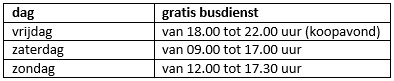
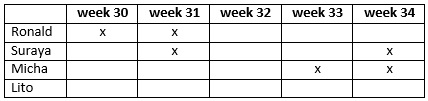

Oefenexamen Lezen A2 versie 3
| Examendatum: | donderdag 28 maart 2024 |
| Punten: | 5 van 25 |
Opgave 1
Irena volgt een cursus Nederlands.
Ze krijgt een e-mail van een docent.
Lees eerst de vraag.
Lees daarna de tekst.
Beste cursist,
Harry de Bont gaat weg. Op 1 mei wordt hij namelijk 67 jaar. Hij stopt dan met werken. Op woensdag 18 april geeft hij zijn laatste les Nederlands en op donderdag 19 april zijn laatste les Engels. Daarna geeft Nadia Luiten de lessen Nederlands. Nirosha Brouwer neemt de lessen Engels over.
Harry heeft bijna dertig jaar gewerkt bij ons cursuscentrum. Dat is heel bijzonder. Daarom geven we een groot feest voor hem. Het feest is op vrijdag 20 april in de kantine. Het begint om 20.00 uur.
Harry krijgt een mooi cadeau van ons allemaal. We hebben met de docenten een mooi geldbedrag bij elkaar gelegd. Daarvan hebben we een bijzonder boek voor Harry gekocht. Willen jullie ook iets doen? Schrijf dan iets voor Harry. Geef je tekst aan Leo Coppens. Hij maakt er een boek van.
Kom je ook afscheid nemen van Harry? We hopen dat het een gezellig feest wordt!
Groet,
Pascal van Dijk| 1. | Wanneer is de laatste les Nederlands van Harry de Bont? |
| (Correct) a) | op 18 april |
| b) | op 19 april |
| c) | op 20 april |
| d) | op 1 mei |
| Gegeven antwoord: | b |
| Score: | 0 van 1 |
| Eerste opslag: | 28-3-2024 18:44:27 |
| Laatste opslag: | 28-3-2024 18:44:27 |
| 2. | Van wie krijgt Irena straks Nederlandse les? |
| a) | van Nirosha Brouwer |
| (Correct) b) | van Nadia Luiten |
| c) | van Leo Coppens |
| d) | van Pascal van Dijk |
| Gegeven antwoord: | c |
| Score: | 0 van 1 |
| Eerste opslag: | 28-3-2024 18:44:29 |
| Laatste opslag: | 28-3-2024 18:44:29 |
Opgave 2
Carmen woont in Maastricht.
Ze leest een artikel op de website van de gemeente.
Lees eerst de vraag.
Lees daarna de tekst.
Gratis stadsbus
Waarom wordt de stadsbus gratis?
Het centrum van Maastricht wordt drukker en drukker. Er rijden steeds meer auto’s en er is vaak niet genoeg plek om te parkeren. Daarom wordt de stadsbus gratis tijdens drukke winkeltijden. We hopen dat het dan minder druk wordt in de stad. En we willen natuurlijk de schoonste gemeente van Limburg blijven!
Wanneer is de stadsbus gratis?
De stadsbus gaat gratis rijden vanaf 1 september. Het gaat om deze dagen en tijden:

Maandag tot en met donderdag betaalt u de hele dag voor de stadsbus.
Wanneer rijdt de stadsbus?
De stadsbus rijdt van 08.00 tot 22.00 uur. Op werkdagen vertrekt de bus elke twintig minuten vanaf het station. Op zaterdag rijdt de bus elke tien minuten. Na 18.00 uur rijdt de bus nog elk kwartier. Op zondag rijdt de bus elke dertig minuten.| 3. | Waarom maakt de gemeente de stadsbus gratis? |
| (Correct) a) | om te zorgen dat er minder auto's komen in de stad |
| b) | om de schoonste gemeente van Limburg te worden |
| c) | om te zorgen dat mensen vaker naar de stad gaan |
| Gegeven antwoord: | c |
| Score: | 0 van 1 |
| Eerste opslag: | 28-3-2024 18:44:31 |
| Laatste opslag: | 28-3-2024 18:44:31 |
| 4. | Carmen wil op maandag de stadsbus nemen.
Hoe vaak gaat de bus die dag? |
| a) | elke tien minuten |
| b) | elk kwartier |
| (Correct) c) | elke twintig minuten |
| d) | elke dertig minuten |
| Gegeven antwoord: | c |
| Score: | 1 van 1 |
| Eerste opslag: | 28-3-2024 18:44:33 |
| Laatste opslag: | 28-3-2024 18:44:33 |
| 5. | Carmen wil op vrijdag gratis met de stadsbus.
Wanneer kan dat? |
| a) | de hele dag |
| b) | alleen overdag |
| (Correct) c) | alleen ’s avonds |
| d) | Dat kan niet op vrijdag. |
| Gegeven antwoord: | c |
| Score: | 1 van 1 |
| Eerste opslag: | 28-3-2024 18:44:34 |
| Laatste opslag: | 28-3-2024 18:44:34 |
Opgave 3
Lisa krijgt een brief van een buurman.
Lees eerst de vraag.
Lees daarna de tekst.
Beste buurtbewoner,
Op 3 juli was er een buurtvergadering. We hebben toen een datum afgesproken voor een activiteit voor de hele buurt. De activiteit is op zaterdag 16 september. Heb jij een goed idee voor een activiteit? Stuur het dan op!
Wat moet je doen?
1) Beschrijf jouw idee voor een activiteit. De activiteit moet leuk zijn voor buurtbewoners van alle leeftijden.
2) Schrijf op wanneer jouw activiteit is: is het overdag, ’s avonds of de hele dag?
3) Reken uit hoeveel de activiteit kost. Vorig jaar kostte de activiteit € 25,- per persoon. Veel mensen vonden dat te duur. Daarom mag de activiteit dit jaar maximaal € 15,- per persoon kosten. Als je ook wilt eten met zijn allen mag het iets duurder zijn. Dan is het maximaal € 20,- per persoon.
4) Stuur jouw idee op naar boris.de.vries@mail.nl. Doe dat voor 1 augustus. We bespreken alle ideeën in de buurtvergadering van 5 augustus.
We hopen dat we uit veel ideeën kunnen kiezen!
Groet,
Boris| 6. | Wat is het belangrijkst aan de activiteit? |
| a) | dat het een hele dag duurt |
| b) | dat er ook wat te eten is |
| (Correct) c) | dat iedereen het leuk vindt |
| Gegeven antwoord: | b |
| Score: | 0 van 1 |
| Eerste opslag: | 28-3-2024 18:44:37 |
| Laatste opslag: | 28-3-2024 18:44:37 |
| 7. | Lisa weet een leuke activiteit.
Voor wanneer moet ze haar idee opsturen? |
| a) | voor 3 juli |
| (Correct) b) | voor 1 augustus |
| c) | voor 5 augustus |
| d) | voor 16 september |
| Gegeven antwoord: | c |
| Score: | 0 van 1 |
| Eerste opslag: | 28-3-2024 18:44:41 |
| Laatste opslag: | 28-3-2024 18:44:41 |
| 8. | Lisa heeft een idee voor een activiteit: spelletjes doen en pannenkoeken eten in het buurthuis.
Hoe duur mag die activiteit maximaal zijn? |
| a) | € 15,- per persoon |
| (Correct) b) | € 20,- per persoon |
| c) | € 25,- per persoon |
| Gegeven antwoord: | c |
| Score: | 0 van 1 |
| Eerste opslag: | 28-3-2024 18:44:43 |
| Laatste opslag: | 28-3-2024 18:44:43 |
Opgave 4
Aziza wil graag in een winkel werken.
Ze bekijkt een vacature op internet.
Lees eerst de vraag.
Lees daarna de tekst.
VERKOPERS GEZOCHT
Nino’s is een van de bekendste winkels voor kinderkleding in Amsterdam. Onze eerste winkel in het centrum was al snel een succes. Ook onze tweede winkel in Amsterdam-Oost groeit hard. We zoeken daarom nog goede verkopers voor deze winkel. Er zijn zelfs plannen voor een nieuwe winkel, in Amsterdam-Zuid!
Wat moet je doen?
Je helpt alle klanten vriendelijk en je zorgt dat iedereen tevreden naar huis gaat. We zoeken verkopers die 16 tot 24 uur kunnen werken. Je werkt minimaal op twee doordeweekse dagen (maandag - vrijdag). Je bent ook op zaterdag beschikbaar.
Wie zoeken wij?
Wij zoeken iemand die flexibel is en hard wil werken. Je hoeft niet veel van mode te weten, maar je moet wel van kleding houden. Ervaring met werken in een kledingwinkel is een voordeel, maar is niet verplicht. Het belangrijkste is dat je goed met kinderen kunt omgaan. Past dit bij jou? Dan ben jij de verkoper die we zoeken!
Interesse?
Solliciteer direct via het online formulier op onze website!| 9. | Voor welke winkel zoekt Nino’s nog mensen? |
| a) | voor alle winkels van Nino's |
| b) | voor de winkel in het centrum |
| (Correct) c) | voor de winkel in Amsterdam-Oost |
| d) | voor de winkel in Amsterdam-Zuid |
| Gegeven antwoord: | d |
| Score: | 0 van 1 |
| Eerste opslag: | 28-3-2024 18:44:46 |
| Laatste opslag: | 28-3-2024 18:44:46 |
| 10. | Voor wanneer zoekt Nino’s nog mensen? |
| a) | alleen voor doordeweeks |
| b) | alleen voor in het weekend |
| (Correct) c) | voor doordeweeks en in het weekend |
| Gegeven antwoord: | c |
| Score: | 1 van 1 |
| Eerste opslag: | 28-3-2024 18:44:48 |
| Laatste opslag: | 28-3-2024 18:44:48 |
| 11. | Wat is het belangrijkste als Aziza bij Nino’s wil werken? |
| (Correct) a) | dat ze goed met kinderen kan omgaan |
| b) | dat ze eerder in een kledingwinkel heeft gewerkt |
| c) | dat ze veel van mode weet |
| d) | dat ze flexibel is en graag hard werkt |
| Gegeven antwoord: | c |
| Score: | 0 van 1 |
| Eerste opslag: | 28-3-2024 18:44:50 |
| Laatste opslag: | 28-3-2024 18:44:50 |
Opgave 5
Chang doet een taalcursus.
Hij leest een e-mail van een medecursist.
Lees eerst de vraag.
Lees daarna de tekst.
Hoi Chang,
Ik mail je, omdat wij maandag onze presentatie over een Nederlandse stad moeten geven. Eliza en Jamil doen hun presentatie donderdag over Utrecht. En de presentatie van gisteren ging over Haarlem. Welke stad kiezen wij? Zullen wij iets over Groningen vertellen? Ik heb daar een jaar gewoond, het is echt een leuke stad.
Ik heb al een paar foto’s van mooie plekken gevonden. Kun jij dan iets zoeken over de geschiedenis van de stad? Dat vind jij niet erg, toch? We moeten ook iets vertellen over de winkels en restaurants. Daarover zoeken we dan wel samen informatie.
Zullen we nog een keer afspreken? Dan kunnen we de presentatie oefenen. Ik kan woensdag wel, bij mij thuis. Donderdag kan het niet bij mij. Mijn man heeft dan bezoek. We kunnen wel na de les in de mediatheek zitten. Vrijdag moet ik werken, dus dan kan ik helemaal niet.
Laat je me weten wanneer jij kunt? Bedankt!
Groetjes,
Sasha| 12. | Over welke stad wil Sasha de presentatie geven? |
| a) | Utrecht |
| b) | Haarlem |
| (Correct) c) | Groningen |
| Gegeven antwoord: | b |
| Score: | 0 van 1 |
| Eerste opslag: | 28-3-2024 18:44:52 |
| Laatste opslag: | 28-3-2024 18:44:52 |
| 13. | Waarover wil Sasha samen met Chang informatie zoeken? |
| a) | over mooie plekken in de stad |
| b) | over de geschiedenis van de stad |
| (Correct) c) | over winkels en restaurants in de stad |
| Gegeven antwoord: | b |
| Score: | 0 van 1 |
| Eerste opslag: | 28-3-2024 18:44:54 |
| Laatste opslag: | 28-3-2024 18:44:54 |
| 14. | Wanneer kan Chang bij Sasha thuis oefenen voor de presentatie? |
| a) | op maandag |
| (Correct) b) | op woensdag |
| c) | op donderdag |
| d) | op vrijdag |
| Gegeven antwoord: | c |
| Score: | 0 van 1 |
| Eerste opslag: | 28-3-2024 18:44:55 |
| Laatste opslag: | 28-3-2024 18:44:55 |
Opgave 6
Selina werkt bij een schoonmaakbedrijf.
Ze krijgt een e-mail van haar manager, Coen.
Lees eerst de vraag.
Lees daarna de tekst.
Beste Selina,
Ik wil je graag iets vragen. Ik heb een probleem met het werkrooster. Farouk belde net: hij heeft zijn arm gebroken. Hij moet volgende week twee dagen werken, maar dat gaat nu niet. Dus ik zoek mensen die extra dagen kunnen werken. Ik heb Rachel al gevraagd, maar zij moet drie dagen naar school. Zij kan daarom maar één dag extra werken: op woensdag. En Kiki werkt volgende week al vijf dagen.
Dus wil jij volgende week misschien een extra dag werken, op dinsdag?
Het zou fijn zijn als je kunt. Laat je me dat vóór vrijdag even weten?
Hartelijke groet,
Coen de Weerdt| 15. | Coen vraagt of Selina extra kan werken.
Voor wie moet Selina werken? |
| a) | Kiki |
| (Correct) b) | Farouk |
| c) | Rachel |
| Gegeven antwoord: | b |
| Score: | 1 van 1 |
| Eerste opslag: | 28-3-2024 18:44:57 |
| Laatste opslag: | 28-3-2024 18:44:57 |
| 16. | Selina kan volgende week extra werken.
Hoeveel dagen moet ze dan extra werken? |
| (Correct) a) | één dag |
| b) | twee dagen |
| c) | drie dagen |
| d) | vijf dagen |
| Gegeven antwoord: | c |
| Score: | 0 van 1 |
| Eerste opslag: | 28-3-2024 18:44:59 |
| Laatste opslag: | 28-3-2024 18:44:59 |
| 17. | Wanneer moet Selina iets laten weten aan Coen? |
| a) | voor dinsdag |
| b) | voor woensdag |
| (Correct) c) | voor vrijdag |
| Gegeven antwoord: | b |
| Score: | 0 van 1 |
| Eerste opslag: | 28-3-2024 18:45:00 |
| Laatste opslag: | 28-3-2024 18:45:00 |
Opgave 7
Abid gaat de cursus Houten Meubels Maken volgen.
Hij leest informatie over de cursus.
Lees eerst de vraag.
Lees daarna de tekst.
Cursus Houten Meubels Maken
De lessen
De cursus Houten Meubels Maken bestaat uit zes lessen. De eerste les is op 18 juni van 10.00 uur tot 15.00 uur. Wij zorgen voor de lunch en koffie of thee. Het enige wat u moet meenemen, is het theorieboek van de cursus. Dat kunt u online bestellen. Verder hebben wij alles wat u nodig hebt voor de cursus. U kunt uw eigen gereedschap dus thuis laten!
In de eerste les leert u welke soorten hout er zijn en wat u daarmee kunt maken. In de lessen daarna gaat u zelf werken met verschillende gereedschappen. In de tweede les begint u met het maken van een klein kistje. En in de lessen erna gaat u uw eigen meubelstuk ontwerpen en maken, bijvoorbeeld een stoel of tafeltje!
Inschrijven
Inschrijven voor de cursus kan via deze website. U kunt ook mailen naar meubelmakers@home.nl.
Afmelden
Hebt u zich ingeschreven, maar kunt u niet naar de les komen of bent u later? Bel dan onze receptie: 023-3691117. Zij melden u dan af bij de docent.| 18. | Wat moet Abid meenemen naar de cursus? |
| (Correct) a) | het theorieboek |
| b) | zijn gereedschap |
| c) | eten en drinken |
| Gegeven antwoord: | b |
| Score: | 0 van 1 |
| Eerste opslag: | 28-3-2024 18:45:02 |
| Laatste opslag: | 28-3-2024 18:45:02 |
| 19. | Wat gaan de cursisten in de eerste les doen? |
| (Correct) a) | leren over verschillende soorten hout |
| b) | leren over soorten gereedschappen |
| c) | een klein kistje maken |
| d) | een eigen meubelstuk ontwerpen |
| Gegeven antwoord: | c |
| Score: | 0 van 1 |
| Eerste opslag: | 28-3-2024 18:45:04 |
| Laatste opslag: | 28-3-2024 18:45:04 |
| 20. | Abid kan niet op tijd in de les zijn.
Wat moet hij doen? |
| a) | een e-mail sturen |
| (Correct) b) | de receptie bellen |
| c) | de docent bellen |
| Gegeven antwoord: | b |
| Score: | 1 van 1 |
| Eerste opslag: | 28-3-2024 18:45:05 |
| Laatste opslag: | 28-3-2024 18:45:05 |
Opgave 8
Mia krijgt een brief van de tandarts.
Lees eerst de vraag.
Lees daarna de tekst.
Geachte mevrouw Krüger,
U hebt op dinsdag 4 oktober om 14.00 uur een afspraak bij tandarts Altman. Tandarts Altman stopt helaas per 1 oktober met werken bij onze praktijk. Hij gaat namelijk verhuizen. Wij hebben nu een afspraak voor u gemaakt bij tandarts Jensma. Wilt u liever naar een andere tandarts? Dat kan. Meld dit dan bij ons. Tandarts Diepenveen werkt nu ook bij onze praktijk. Hij is net klaar met studeren. Tandarts De Groot kent u misschien al, maar hij zit op dit moment vol.
Uw afspraak van 4 oktober is verplaatst naar een andere datum: 16 oktober. Het tijdstip van de afspraak (14.00 uur) blijft hetzelfde. Kunt u dan niet? Neem even contact met ons op.
Wij hopen dat we u voldoende hebben geïnformeerd.
Met vriendelijke groet,
Jenny Koolstra
Secretaresse| 21. | Waarom is de afspraak van Mia verplaatst? |
| a) | Haar tandarts heeft geen plek meer. |
| b) | Haar tandarts gaat weer studeren. |
| (Correct) c) | Haar tandarts gaat verhuizen. |
| Gegeven antwoord: | b |
| Score: | 0 van 1 |
| Eerste opslag: | 28-3-2024 18:45:07 |
| Laatste opslag: | 28-3-2024 18:45:07 |
| 22. | Wanneer heeft Mia een nieuwe afspraak? |
| a) | op 1 oktober |
| b) | op 4 oktober |
| (Correct) c) | op 16 oktober |
| Gegeven antwoord: | b |
| Score: | 0 van 1 |
| Eerste opslag: | 28-3-2024 18:45:08 |
| Laatste opslag: | 28-3-2024 18:45:08 |
Opgave 9
Lito werkt bij de gemeente.
Hij krijgt een e-mail van zijn baas, Pascal.
Lees eerst de vraag.
Lees daarna de tekst.
Dag Lito,
Je hebt je zomervakantie nog niet aangevraagd. Wil je dat deze week doen? Dan kan ik een nieuwe planning voor de vakantieperiode maken. In het rooster kun je zien wie wanneer al vakantie heeft.

Vergeet ook de vakantieregels niet:
- Je mag maximaal twee weken vakantie opnemen. Je mag twee weken achter elkaar vrij nemen, maar het mogen ook twee losse weken zijn.
- Er is altijd iemand nodig aan de balie én iemand om de telefoon op te nemen. Er moeten dus altijd twee collega’s aan het werk zijn.
- Zorg ervoor dat je geen belangrijk werk hebt in de weken waarin je vakantie wilt.
- Vanaf week 35 wordt het weer druk. Dan moet iedereen weer aan het werk zijn.
Vriendelijke groet,
Pascal
| 23. | Waarom stuurt Pascal deze e-mail? |
| a) | omdat hij de nieuwe vakantieregels wil uitleggen |
| b) | omdat hij graag zijn vakantie wil plannen |
| (Correct) c) | omdat hij het vakantierooster wil maken |
| Gegeven antwoord: | b |
| Score: | 0 van 1 |
| Eerste opslag: | 28-3-2024 18:45:10 |
| Laatste opslag: | 28-3-2024 18:45:10 |
| 24. | Waarom moeten er altijd twee collega’s aan het werk zijn in de zomer? |
| (Correct) a) | omdat er altijd iemand bij de balie en de telefoon moet zijn |
| b) | omdat er veel belangrijk werk te doen is in de zomer |
| c) | omdat Pascal denkt dat het in de zomer druk gaat worden |
| Gegeven antwoord: | b |
| Score: | 0 van 1 |
| Eerste opslag: | 28-3-2024 18:45:12 |
| Laatste opslag: | 28-3-2024 18:45:12 |
| 25. | Lito wil twee weken achter elkaar vrij.
Wanneer kan Lito het beste vakantie nemen? |
| a) | in week 30 en 31 |
| b) | in week 31 en 32 |
| (Correct) c) | in week 32 en 33 |
| d) | in week 33 en 34 |
| Gegeven antwoord: | (Geen antwoord gegeven) |
| Score: | 0 van 1 |
| Eerste opslag: | 28-3-2024 18:45:17 |
| Laatste opslag: | 28-3-2024 18:45:17 |